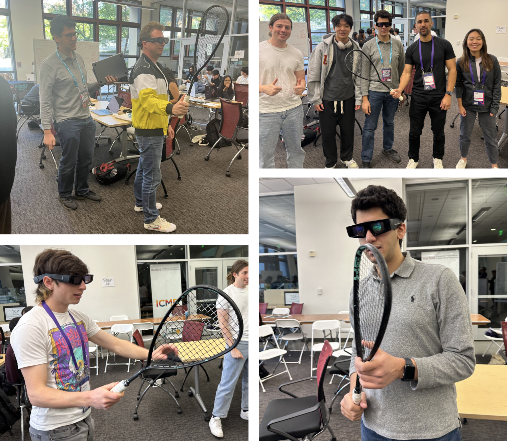

Squash Training on Spectacles
Demo

Demoing to the Snap Team.
Project Overview
- I was playing squash three times a week to be good enough to join the Club Team. Still, after a lot of weeks of (solo) training, there was no improvement in technique because I would always flick my wrist while hitting the ball. So, I needed something to remind me to FIX my wrist while hitting.
- I wanted to try Spectacles (Snap’s new AR glasses) and wanted to build something that was only possible on AR (non-gaming related). As a part of the hackathon I built a simple app to track and optimize my wrist motions.
- It was a couple days of work, so nothing extensive was built. Camera tracking quality wasn’t there; bad hand tracking; can’t really play squash with glasses, doesn’t handle sweating well (I tried it :). but still an interesting concept.